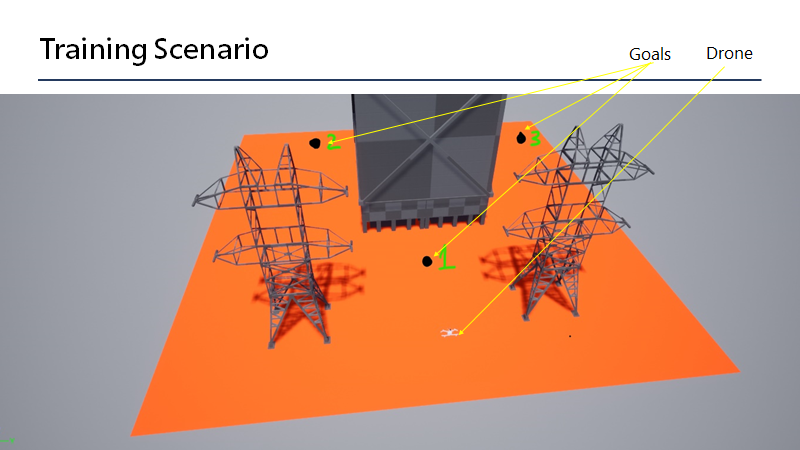

Autonomy Gym Environments¶
Project AirSim’s Autonomy module offers a set of “Gym environments”, which are Project AirSim Simulation environments with built-in mechanisms to act as a training platform for Reinforcement Learning agents. The Autonomy Gym environments represent configurable Markov Decision Processes with an interface compatible with the OpenAI Gym specifications. This allows the user to use any Reinforcement Learning algorithm to train an Agent to solve tasks like obstacle avoidance, drone landing, etc.
Following is a description of the RL Gym environments made available as part of this release:
1. Detect Avoid¶
The ProjectAirSimDetectAvoidEnv-v0 environment allows training an RL Agent to control a Drone/UAV to avoid obstacles and reach desired goal locations in a ProjectAirSim simulation environment.
The training scenario with the default set of config values for the goal locations and start state is shown below:

The Agent is tasked with controlling the drone using high-level velocity vector commands to navigate the drone to the goal location while avoiding the obstacles.
Using the environment for RL training¶
Setup: If you have not done so already, please follow the autonomy module setup instructions to setup a Python environment with the necessary Project AirSim client library modules installed.
python -m pip install projectairsim-{VERSION}-py3-none-any.whl[autonomy]
Run Project AirSim Sim server:
Blocks.sh/Blocks.exeCreate ProjectAirSim Detect-Avoid Gym environment:
import projectairsim.autonomy.gym_envs
import gym
detect_avoid_env = gym.make("ProjectAirSimDetectAvoidEnv-v0")
# Use the `detect_avoid_env` like any other OpenAI Gym Environment to train your RL Agent!
State/Observation space and Action space¶
observation_space: spaces.Dict = spaces.Dict({
"pose": spaces.Box(-math.inf, math.inf, shape=(4,)),
"obstacles": spaces.Tuple(
(
spaces.Box(0, math.inf, obstacle_bbox_shape)
for _ in range(num_obstacles)
)
),
"distance_to_obstacles": spaces.Box(-math.inf, math.inf, (num_obstacles,)),
"displacement_to_goal": spaces.Box(-math.inf, math.inf, (3,)) # Dx, Dy, Dz
})
action_space = spaces.Box(-1.0, 1.0, shape=(3,))
reward = (arena_norm_factor – norm_l2(GoalPose, DronePose)) / arena_norm_factor
Customizing the training environment¶
This environment has the following features which promote generalizability in the learned Agent policies:
Randomize Goal location on every episode
Randomize Obstacle locations on every episode
Enable/Disable episodic obstacle randomization
The list of configurable parameters supported by this environment is provided below with comments on their usage:
{
"dt": 0.1,
"step_limit": 200,
"goal_tolerance": 0.5,
"randomize_obstacle_poses": False,
"num_obstacles": 1,
"arena_config": {
"top_left": {"x_m": 145, "y_m": 350, "z_m": -1.1},
"center": {"x_m": 96, "y_m": 398, "z_m": -1.1},
"extent_x_m": 98,
"extent_y_m": 96,
"extent_z_m": 100,
},
"goals": {
"v_vertex": {"x": 75.3, "y": 399.4, "z": 1.1},
"v_apex_left": {"x": 136.5, "y": 370.7, "z": 1.1},
"v_apex_right": {"x": 133.8, "y": 422.4, "z": 1.1},
},
"obstacles_info": {
"PowerTower": {
"size": {
"length_m": 9.6,
"breadth_m": 22,
"height_m": 38,
}
},
"Building": {
"size": {"length_m": 62.0, "breadth_m": 62.0, "height_m": 242}
},
},
"obstacles_config": {
"PowerTower1": {
"type": "PowerTower",
"pose": {
"translation": Vector3({"x": 64.0, "y": 372.0, "z": -1.0}),
"rotation": Quaternion({"w": 0, "x": 0, "y": 0, "z": 0}),
},
"scale": [1, 1, 1],
"enable_physics": False,
},
"PowerTower2": {
"type": "PowerTower",
"pose": {
"translation": Vector3({"x": 65.2, "y": 420.0, "z": -1.0}),
"rotation": Quaternion({"w": 0, "x": 0, "y": 0, "z": 0}),
},
"scale": [1, 1, 1],
"enable_physics": False,
},
"Building1": {
"type": "Building",
"pose": {
"translation": Vector3({"x": 105.0, "y": 400.0, "z": -1.0}),
"rotation": Quaternion({"w": 0, "x": 0, "y": 0, "z": 0}),
},
"scale": [0.5, 0.5, 0.5],
"enable_physics": False,
},
},
"obstacle_poses": {
"front-left": {
"translation": Vector3({"x": 64.0, "y": 372.0, "z": -1.0}),
"rotation": Quaternion({"w": 0, "x": 0, "y": 0, "z": 0}),
},
"front-right": {
"translation": Vector3({"x": 65.2, "y": 420.0, "z": -1.0}),
"rotation": Quaternion({"w": 0, "x": 0, "y": 0, "z": 0}),
},
"back": {
"translation": Vector3({"x": 105.0, "y": 400.0, "z": -1.0}),
"rotation": Quaternion({"w": 0, "x": 0, "y": 0, "z": 0}),
},
},
}
RL Policy Performance Assessment and Debugging¶
The ProjectAirSimDetectAvoidEnv-v0 offers a debugging mode to help with runtime assessment of RL Agents and to visualize and identify issues during training.
This mode can be enabled by setting DEBUGGING to True in the projectairsim_detect_avoid_env.py script. Once set, a visual rendering is enabled at every step(a) in the environment similar to the screenshot shown below: